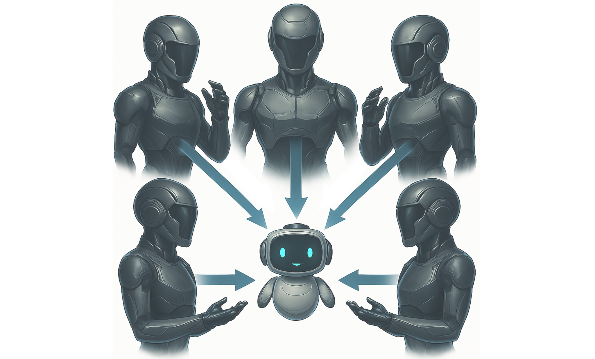
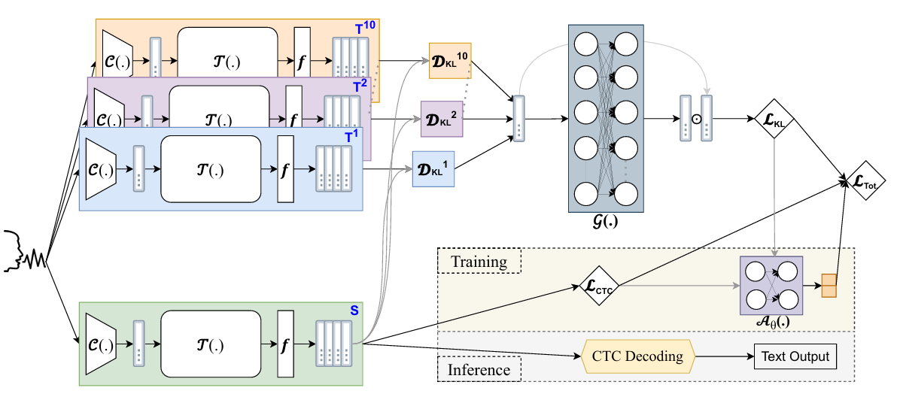

|
I am a PhD student in the AaltoASR research group, supervised by Prof. Mikko Kurimo, working in speech and language processing and specializing in dialectal/accented automatic speech recognition. My research interests include speech-focused LLMs, multimodality, and RL. I am open to collaborations and new opportunities. When it comes to leisure, I enjoy playing cricket \|/🏏, cooking without following a recipe 🧑🍳🥣, and wandering deep into forests 🌳🚶🏻➡️🌴. Email / CV / LinkedIn / Google Scholar / GitHub |

|
- (September 2025): Started my PhD in Speech and Language Processing 🎉.
- (August 2025): Presented a first-authored paper at Interspeech 2025 🎉.
- (June 2025): Completed my master’s degree with honours 🎉.
- (January 2025): A first-authored journal article was published in Computer Speech & Language 🎉.
- (August 2024): A first-authored paper was published in ACMM 2024 / MuSe 2024 🎉.
- (July 2024): Our team (AaltoASR) placed 3rd in both shared tasks at ACMM 2024 / MuSe 2024 🥉🏆.
- (April 2024): A first-authored journal article was published in Neural Computing and Applications 🎉.
- (March 2024): Joined the Automatic Speech Recognition research group as a Research Assistant 🕵.
- (February 2024): A first-authored journal article was published in IEEE Access 🎉.
- (December 2023): A first-authored paper was accepted at EMNLP 2023 / BLP 2023 🎉.
- (October 2023): Started an MSc in Speech and Language Processing at Aalto University 👨💻.
- (September 2023): Served as a Reviewer 🕵️♂️ for the BLP workshop at EMNLP 2023.
- (January 2023): Joined Bangladesh University of Business and Technology as a Lecturer 👨🏫.
|
|
|  |
Keywords: Multi-Teacher Knowledge Distillation, Accented ASR, Multilingual SER Multi-teacher knowledge distillation is a training approach where a student model learns from the combined guidance of multiple teacher models, capturing diverse knowledge to improve speech recognition performance. Learn More → |
|
|

|
It showcases Bangla Handwritten Character Recognition using various Convolutional Neural Network architectures, implemented with both Keras and PyTorch. Video / GitHub Repo. |
|
|
|  |
Publications: @Interspeech 2025 and @---- This thesis develops a dual-adaptive multi-teacher knowledge distillation framework that fuses expertise from multiple accent-specialist models into a single compact student, enabling robust and efficient speech recognition across diverse and unseen English accents.
|
|
|